基于 STM32F407 的 SPI Flash下载算法
[toc]
一、概述
本文将介绍如何使用 MDK 创建 STM32F407 的 SPI Flash 下载算法。
其中，
SPI Flash芯片使用的是W25Q128，其相关操作源码可以参考 STM32 通过 SPI 驱动 W25Q128，本文所使用的驱动 SPI Flash 的 API 和里面是一样的。
单片机的 Flash 下载算法是一个 FLM 文件，FLM 通过编译链接得到，其内部包含一系列对 FLASH 的操作，包括初始化、擦除、写、读、校验等等操作。
想要制作下载算法，先要了解下载算法的工作原理。我们下载一个程序的流程大概是这样的：
- 下载工具（比如
jlink）读取 FLM 文件 - 然后
JLINK提取 FLM 文件的信息，将其传输到单片机的内部 SRAM - 下载算法开始在 SRAM 中运行，由于下载算法包含了一系列对 Flash 的操作，那么下载工具通过下发初始化、擦除、写入、校验等指令给单片机，单片机去执行这些指令操作，实现对单片机 Flash 的下载。
二、自制 FLM 文件
我参照的是 MDK 给的程序模板来完成 Flash 下载程序，然后在模板的基础上加上自己的代码。
模板路径如下：D:\Keil_v5\ARM\Packs\ARM\CMSIS\5.8.0\Device\_Template_Flash，不同的 MDK 版本可能路径不一样。
然后将项目拷贝到你的工作目录下，并取消该工程项目的只读属性。
打开项目如下：
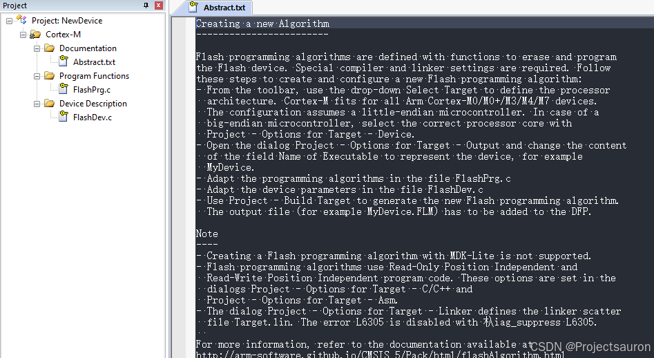
然后开始我们的工作。
1、修改使用的芯片
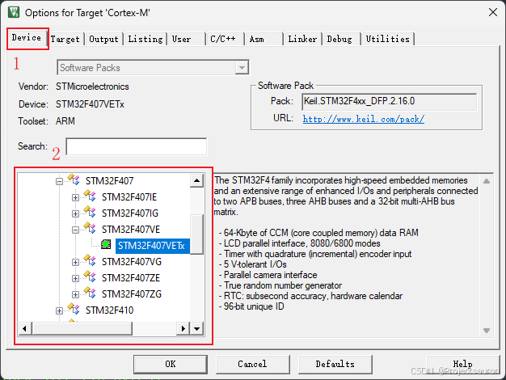
首先选择你的芯片类型和型号。
2、修改输出算法的名称
这一步不是必须的，改个名称方便自己查看。
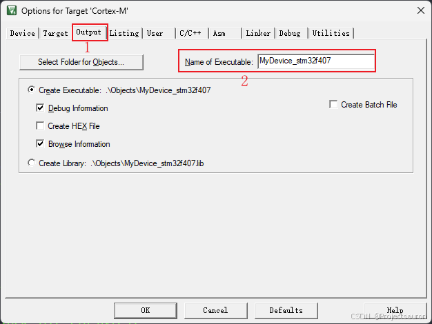
注意这个名称只是项目最终生成输出的 FLM 文件的名称，和下面位置识别出的算法名（后面会介绍这个名称如何修改）无关。
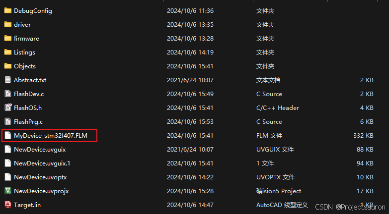

3、其它设置
注意：
这里的设置在模板文件中已经设置好了，这里主要是介绍一些，可以跳过
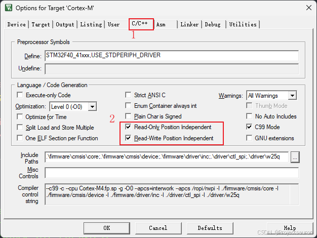
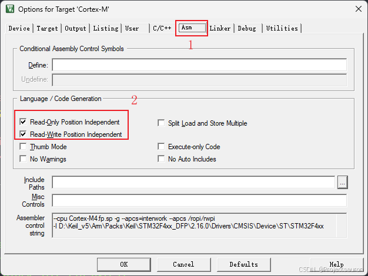
这两个设置是为了保证生成的算法文件中 RO 和 RW 段的独立性，即与地址无关。
如果程序的所有只读段都与位置无关，则该程序为只读位置无关（ROPI，Read-only position independence）。ROPI 段通常是位置无关代码（PIC，position-independent code），但可以是只读数据，也可以是 PIC 和只读数据的组合。选择“ ROPI”选项，可以避免用户不得不将代码加载到内存中的特定位置。这对于以下例程特别有用：
- 加载以响应运行事件。
- 在不同情况下使用其他例程的不同组合加载到内存中。
- 在执行期间映射到不同的地址。
使用 Read-Write position independence 同理，表示的可读可写数据段。
通过下面的命令就可以将生成的 axf 可执行文件修改为 FLM。
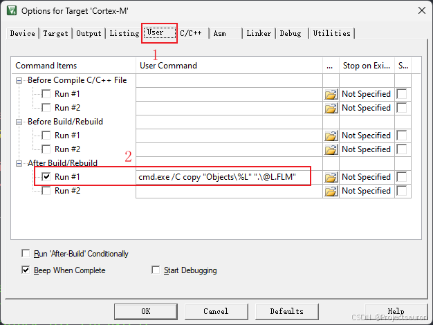
我们这里的分散加载文件直接使用 MDK 模板工程里提供好的即可，无需任何修改。
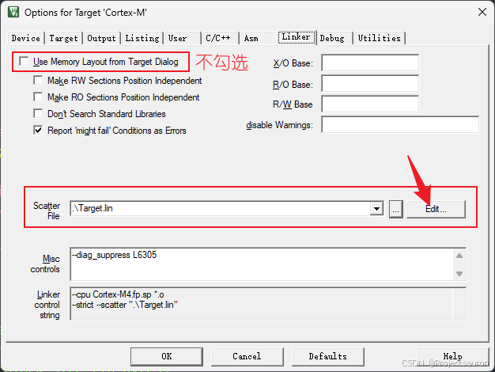
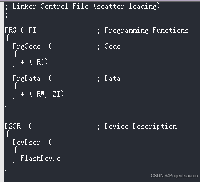
4、修改配置文件 FlashDev.c
模板工程里面提供简单的配置说明：
1 | struct FlashDevice const FlashDevice = { |
这里的注释已经说得很明白了，大家根据自己的芯片来进行修改即可，我使用的是 W25Q128，其存储大小为 16MB，一个扇区 4KB，所以修改如下：
W25Q128一页是 256KB，但这里写的 4096 是为了提高下载速率和擦除速率，如果你把 4096 改为 8，可以很明显得感受到下载速度变慢了
1 | struct FlashDevice const FlashDevice = { |
其中，SPI_FLASH_MEM_ADDR 是我在 FlashOS.h 文件中定义的一个宏，表示 Flash 的起始地址：
1 |
这里的算法名称就体现在这里：
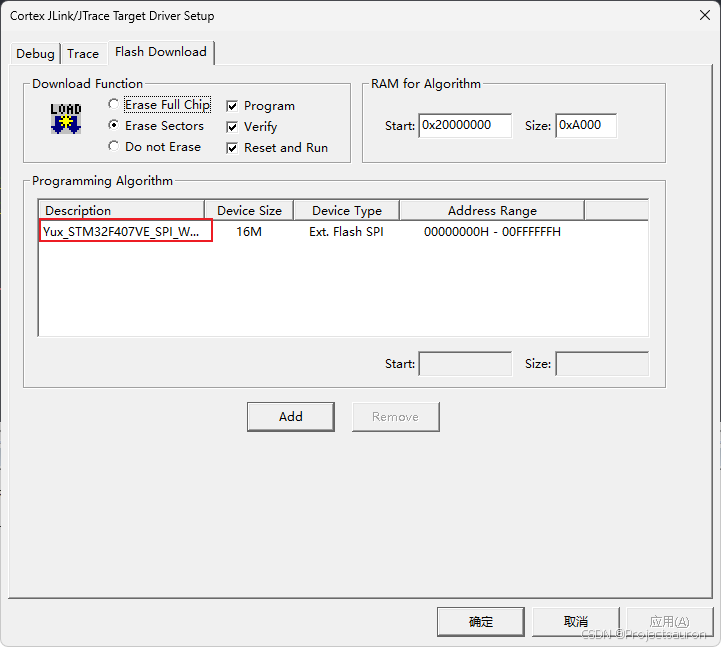
5、文件 FlashPrg.c 的实现
模板文件中提供了这几个函数，也是我们完成 Flash 下载算法最关键的地方：
1 | // Flash 初始化 |
这里涉及到了对 W25Q128 的相关操作，详细内容参照： STM32 通过 SPI 驱动 W25Q128，这里主要是调用之前实现的函数。
我使用的是标准库，所以还要添加一些相关的文件进来：
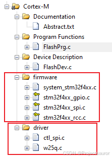
实现如下：
- 初始化函数
1 | int Init (unsigned long adr, unsigned long clk, unsigned long fnc) { |
这里的 SystemInit 是 system_stm32f4xx.c 中的函数，在 STM32 时钟树（基于 STM32F407） 一文中讨论过。
- 复位函数
Uninit 没有用到，所以不用改。
- 擦除整个芯片
1 | int EraseChip (void) { |
- 擦除指定扇区
1 | int EraseSector (unsigned long adr) { |
- 页编程
1 | int ProgramPage (unsigned long adr, unsigned long sz, unsigned char *buf) { |
- 校验
1 | unsigned char aux_buf[4096]; |
为什么要
adr -= SPI_FLASH_MEM_ADDR;？
因为实际传递进来的地址是带了首地址的，即0x00000000（如果你定义的是其它地址，而不执行adr -= SPI_FLASH_MEM_ADDR;就会出错）。特别注意，我们这里的0xC0000000是随意设置的，因为 STM32F4 的标准 SPI 外设并不支持内存映射。
这里执行的擦除大小要前面
FlashDev.c文件中配置的扇区大小一致，这里是执行的 4KB 为扇区进行擦除。
现在编译之后就可以在项目目录下看见一个 FLM 文件。下面就来验证一下我们的下载算法是否正确。
三、验证算法
首先把我们的 FLM 文件放到如下目录中：D:\Keil_v5\ARM\Flash，可以看到这里有很多 FLM 和 FLX 文件。
这里我随便找了一个项目，按如下方式添加自己的 Flash 下载算法：
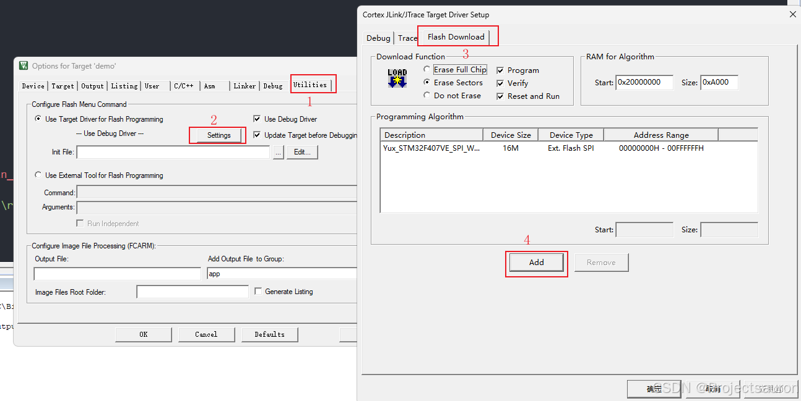
然后，编译下载，然后我报了如下的错误：
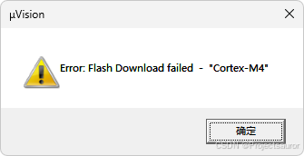
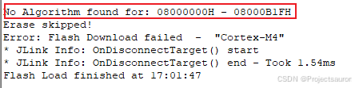
报错原因是下载算法没有找到 08000000H 这个地址，我这里使用的是默认的链接脚本：
1 | LR_IROM1 0x08000000 0x00100000 { ; load region size_region |
有关链接脚本的部分可以参考：
浅析 Keil 中的 sct 文件，
分散加载文件 scatter files。
这部分的内容比较复杂，我就直接给出解决方案了：
1 | LR_IROM1 0x00000000 0x00100000 { ; load region size_region |
这下编译成功了。但至于写没写入并不清楚，写没写对也不知道。所以我又写了个 W25Q128 的读取程序：
1 | w25q32_dev.rd(data, 0x00000000, sizeof(data)); |
话不多说，看结果（比较的是 bin 文件）：
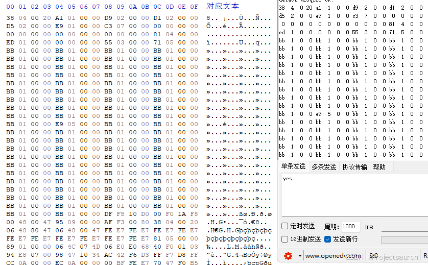
说明算法编写成功 (^人^)。